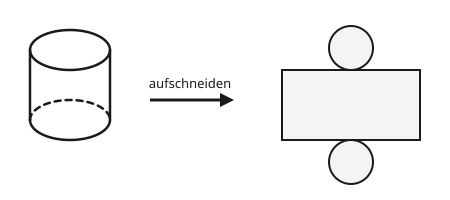

Netze von Prisma und Zylinder
Mit einem KI-Tutor lernen
Ein KI-Tutor erklärt dir diese Seite und hilft dir bei den Aufgaben. Wähl deinen Assistenten:
Mit Claude öffnen Mit ChatGPT öffnen Mit Mistral Vibe öffnen
Du nutzt dein eigenes Konto beim Anbieter. Der Assistent ist kein Angebot von lernapps.net: lernapps liefert nur Inhalte und Aufgaben. Die Wahl gilt für alle Seiten, nur auf diesem Gerät.
Ein Prisma aufklappen
Wenn du eine Dose oder ein Prisma aus Pappe bauen willst, musst du wissen, wie sein Netz aussieht. Beim Quader hast du Netze gefaltet. Schneidest du ein Prisma auf, liegt auch ein Netz vor dir. Nach dieser Seite findest und prüfst du das Netz von Prisma und Zylinder. Das Bild zeigt ein Netz.
 © CC-BY-4.0
© CC-BY-4.0Das Prisma wird an den Kanten aufgeschnitten und flach gelegt. Rechts siehst du sein Netz.
Aufgabe
Lösung
Richtige Antwort: 3
Die drei Rechtecke a, b und c sind die Seitenflächen des Prismas. Dazu kommen die zwei Dreiecke als Grundfläche und Deckfläche.
Mantel und Deckel
Wenn du ein Netz zeichnen willst, überlegst du: Welche Flächen bilden den Mantel, welche sind Boden und Deckel? Beim Prisma bilden die Seitenflächen den Mantel: so viele Rechtecke nebeneinander, wie die Grundfläche Ecken hat. Zusammen sind sie so lang wie der Rand der Grundfläche. Grundfläche und Deckfläche hängen an den Seiten des Mantels, die so lang sind wie ihr Rand. Beim Zylinder ist der Mantel ein einziges Rechteck. Eine Seite ist so lang wie der Rand des Kreises, denn der Mantel rollt sich um den Kreis. Die zwei Kreise hängen an den beiden Seiten, die so lang sind wie ihr Rand.

© CC-BY-4.0Der Zylinder wird aufgeschnitten: Der Mantel wird zum Rechteck, Boden und Deckel bleiben Kreise.
Eine Dose aufschneiden
Schneidest du eine Dose am Rand von Deckel und Boden ab und den Mantel einmal senkrecht auf, liegt das Netz flach: ein langes Rechteck und zwei Kreise. Die Höhe des Rechtecks ist die Höhe der Dose.
Übung
Aufgabe
Lösung
Netz A richtige Antwort
Der Mantel ist ein langes Rechteck. An seinen langen Seiten hängen oben und unten die Kreise. Jede dieser Seiten ist so lang wie der Kreisrand.
Netz B
Hier hängen die Kreise an den kurzen Seiten des Rechtecks. Die sind kürzer als der Rand eines Kreises und passen nicht.
Netz C
Hier hängen beide Kreise an derselben Seite. Dann ist der Deckel doppelt da, und unten fehlt der Boden.
Beim Zylinder hängt an zwei gegenüberliegenden Seiten des Mantels je ein Kreis, einer oben, einer unten. Diese Seiten sind so lang wie der Kreisrand.
Aufgabe
Drei Beispielaufgaben, jede mit ihrer Lösung:
Aufgabe Nr. 1
Ein Prisma ist 4 cm hoch. Seine Grundfläche ist ein Dreieck mit den Seiten 5 cm, 7 cm und 11 cm. Wie lang ist die Seite des Rechtecks im Netz, die an der Dreiecksseite 7 cm liegt?
Tipp
Das Rechteck hängt an einer Seite des Dreiecks. Wie lang ist diese Seite?
Lösung
- Das Rechteck hängt mit einer Seite am Dreieck, und diese Seite ist 7 cm lang. Die Höhe 4 cm ist die andere Seite des Rechtecks. Gefragt ist die Seite am Dreieck: 7 cm.
Richtige Antwort: 7
Aufgabe Nr. 2
Ein Prisma ist 4 cm hoch. Seine Grundfläche ist ein Dreieck mit den Seiten 6 cm, 7 cm und 9 cm. Wie lang ist die Seite des Rechtecks im Netz, die an der Dreiecksseite 7 cm liegt?
Tipp
Das Rechteck hängt an einer Seite des Dreiecks. Wie lang ist diese Seite?
Lösung
- Das Rechteck hängt mit einer Seite am Dreieck, und diese Seite ist 7 cm lang. Die Höhe 4 cm ist die andere Seite des Rechtecks. Gefragt ist die Seite am Dreieck: 7 cm.
Richtige Antwort: 7
Aufgabe Nr. 3
Ein Prisma ist 4 cm hoch. Seine Grundfläche ist ein Dreieck mit den Seiten 6 cm, 9 cm und 10 cm. Wie lang ist die Seite des Rechtecks im Netz, die an der Dreiecksseite 9 cm liegt?
Tipp
Das Rechteck hängt an einer Seite des Dreiecks. Wie lang ist diese Seite?
Lösung
- Das Rechteck hängt mit einer Seite am Dreieck, und diese Seite ist 9 cm lang. Die Höhe 4 cm ist die andere Seite des Rechtecks. Gefragt ist die Seite am Dreieck: 9 cm.
Richtige Antwort: 9
Aufgabe
Drei Beispielaufgaben, jede mit ihrer Lösung:
Aufgabe Nr. 1
Die drei Rechtecke des Mantels liegen im Netz nebeneinander. Das Prisma ist 5 cm hoch, die Grundfläche ein Dreieck mit den Seiten 5 cm, 7 cm und 9 cm. Wie lang ist der ganze Mantel in der langen Richtung?
Tipp
Der Mantel ist so lang wie der Rand der Grundfläche.
Lösung
- Der Mantel ist so lang wie der Rand des Dreiecks: 5 + 7 + 9 = 21 cm.
Richtige Antwort: 21
Aufgabe Nr. 2
Die drei Rechtecke des Mantels liegen im Netz nebeneinander. Das Prisma ist 5 cm hoch, die Grundfläche ein Dreieck mit den Seiten 6 cm, 9 cm und 10 cm. Wie lang ist der ganze Mantel in der langen Richtung?
Tipp
Der Mantel ist so lang wie der Rand der Grundfläche.
Lösung
- Der Mantel ist so lang wie der Rand des Dreiecks: 6 + 9 + 10 = 25 cm.
Richtige Antwort: 25
Aufgabe Nr. 3
Die drei Rechtecke des Mantels liegen im Netz nebeneinander. Das Prisma ist 3 cm hoch, die Grundfläche ein Dreieck mit den Seiten 6 cm, 8 cm und 9 cm. Wie lang ist der ganze Mantel in der langen Richtung?
Tipp
Der Mantel ist so lang wie der Rand der Grundfläche.
Lösung
- Der Mantel ist so lang wie der Rand des Dreiecks: 6 + 8 + 9 = 23 cm.
Richtige Antwort: 23
Aufgabe
Lösung
Richtige Antwort: 7
Fünf Rechtecke bilden den Mantel, dazu kommen die Grundfläche und die Deckfläche, beide Fünfecke.
Aufgabe
Lösung
Richtige Antwort: Die Aussage stimmt.
Der Mantel rollt sich einmal um den Kreis. Darum passt der Rand des Kreises genau an eine Seite des Rechtecks.
Fehler gefunden oder eine Idee für diese App?